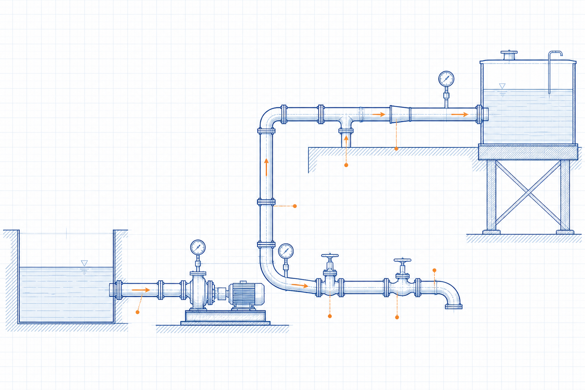
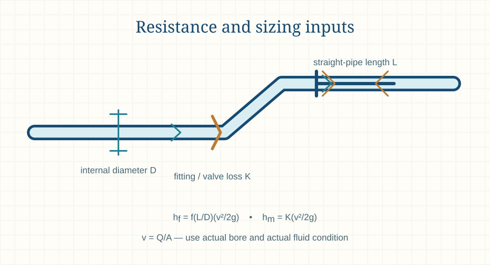

Engineering principle
Pipe Sizing: Engineering Inputs and Limitations
Pipe sizing is a multi-input engineering decision that balances required flow, allowable velocity, pressure loss, pump head, material, erosion, noise, operating flexibility and maintainability.

- Content type
- Engineering principle
- Level
- Engineering › Fluid Mechanics, Piping, Pumps, Fans and Ducts › Piping Systems › Piping Design Basics › Pipe Sizing: Engineering Inputs and Limitations
- Audience
- Student · Design engineer · Project engineer · Plant engineer
- Last reviewed
- 30 August 2026
What Is Pipe Sizing: Engineering Inputs and Limitations?
Pipe sizing is the selection of a suitable nominal pipe size, schedule or wall construction for a stated fluid service. The process balances flow rate, velocity, pressure loss, static head, pressure rating, erosion, noise, solids handling, cleanability, control requirements, layout and life-cycle cost.
A velocity target is useful as an early screening input, but it is not a complete sizing method. The selected nominal size must be checked against actual internal diameter, pipe material, wall thickness, fittings, equipment nozzles, fluid properties, pump or compressor capability and applicable codes.
The correct answer may differ between minimum, normal, maximum, start-up, cleaning and upset cases. A good preliminary calculation documents the selected design basis and shows the limitations rather than presenting a single diameter as a final specification.
Why Is Pipe Sizing: Engineering Inputs and Limitations Important in Engineering?
Incorrect pipe sizing can cause excessive energy use, low available pressure, poor pump operation, vibration, noise, erosion, sedimentation, difficult control or unnecessary capital cost. In process plants, line size also affects structural loads, insulation quantity, access, drainage and maintainability.
The calculation must consider the actual fluid behaviour. A water velocity guideline cannot be transferred directly to viscous oil, slurry, steam, compressed gas, abrasive solids or a sanitary service without an appropriate method and project criteria.
Key Terms and Definitions
- Nominal pipe size
- A designation; it is not necessarily the actual internal diameter.
- Internal diameter, D
- The actual bore available for flow after schedule, lining or wall-thickness effects.
- Flow rate, Q
- Actual or reference volume flow; the condition basis must be stated.
- Velocity, v
- Mean flow velocity, normally calculated as Q/A.
- Pressure loss
- Pressure reduction caused by friction, components, elevation and equipment requirements.
- Schedule or wall thickness
- Pipe-wall designation that affects bore, pressure capability and mechanical strength.
- Design case
- Defined operating condition used for sizing and equipment selection.
- Allowable velocity
- Project or service guidance used with, not instead of, hydraulic and mechanical checks.
Fundamental Principle
For a circular pipe, velocity follows v = 4Q/(πD²). This makes internal diameter influential: reducing D increases velocity rapidly, which in turn tends to increase friction and local losses. A preliminary diameter can be calculated from a chosen velocity, then tested against a full pressure-loss and serviceability assessment.
Pipe size is not decided only by fluid mechanics. Pressure rating, corrosion allowance, thermal expansion, supports, nozzle loads, drainage, piggability, cleaning, availability and standardisation can all influence the selected nominal line.
Engineering interpretation and design basis
Pipe sizing is a system decision, not the selection of a nominal diameter from a velocity table. The line must carry the required flow across credible operating cases while meeting pressure, velocity, controllability, materials, installation, cleaning, safety and cost requirements. The line can be technically oversized for one criterion and undersized for another, which is why a traceable design basis is essential.
A nominal pipe size does not define its internal flow area. Schedule, wall thickness, lining, corrosion allowance, tube versus pipe convention and fabrication details affect bore and therefore velocity and pressure loss. The calculation should use the actual design internal diameter and identify any future or degraded condition that changes it.
Formulae, Symbols and Units
Flow area
A = πD² / 4
Use actual internal diameter D in metres to obtain area in m².
Mean velocity
v = Q / A = 4Q/(πD²)
Use actual volume flow Q in m³/s and actual internal area A.
Preliminary diameter
D = √(4Q/(πv))
This gives a theoretical internal diameter for a stated flow and screening velocity.
Straight-pipe loss
hf = f(L/D)(v²/2g)
A complete sizing check uses Darcy-Weisbach or another approved service method plus local losses.
Interpretation before use
The theoretical diameter obtained from a velocity equation is a hydraulic starting point. It has no pressure class, wall thickness, corrosion allowance, valve compatibility or constructability meaning until it is translated into an actual pipe construction.
Involve piping, mechanical, process, operations and maintenance review before freezing a line size. Their combined checks are needed for code compliance, pipe supports, drainage, isolation, access, flexibility, vibration and the chosen material system.
Using the result in engineering work
Velocity is obtained from actual volume flow divided by internal area, but the governing volume may be different at a pump suction, discharge, hot-gas duct, gas compressor line or control-valve inlet. Use the actual condition at the location. For gases, a reference volume must first be translated to an actual local volume before it is used for velocity.
Pressure-loss calculations need to include straight-pipe friction, fittings, valves, equipment, elevation, fluid-property variation and operating flow range. Velocity limits are screening inputs, not universal rules. A suitable velocity depends on erosion, noise, deposition, water hammer, entrained solids, two-phase risk, process control and cleaning requirements.
Assumptions and Validity Range
- The design flow range and fluid condition are defined.
- The chosen velocity guide is appropriate for the service and operating case.
- Actual internal diameter is based on the selected material, schedule, lining and corrosion allowance.
- Pressure-loss calculation includes pipe length, fittings, valves, equipment and elevation.
- Mechanical, code, corrosion, support, drainage and layout requirements are checked separately.
- The result remains a preliminary screening until approved by the project design process.
Factors Affecting the Result
Flow range
Minimum, normal, maximum, recirculation and upset flows can produce different controlling conditions.
Fluid properties
Density, viscosity, solids content, compressibility and vapour pressure affect the suitable method.
Velocity guidance
Recommended ranges depend on erosion, noise, deposition, control and economic considerations.
Allowable pressure loss
Available pump, compressor or process pressure margin constrains the line resistance.
Pipe construction
Schedule, lining, roughness, corrosion allowance and material determine the available bore and durability.
Operations and maintenance
Flushing, drainage, pigging, cleaning, isolation, access and future capacity may change the preferred size.

Step-by-Step Engineering Method
- Define the service. Record fluid, composition, temperature, pressure, solids, corrosivity, design life and all operating flow cases.
- Set project criteria. Identify allowable pressure loss, velocity guidance, code requirements and standard pipe materials.
- Calculate a screening bore. Use the actual-volume flow and an appropriate preliminary velocity.
- Select candidate nominal sizes. Obtain real internal diameters for the applicable schedule or construction.
- Calculate the full system loss. Include straight pipe, fittings, valves, equipment, elevation and a realistic roughness/fouling basis.
- Check mechanical and operational requirements. Review pressure rating, supports, nozzle interfaces, erosion, noise, cleaning, drainage and maintenance.
- Compare alternatives. Balance capital cost, energy use, controllability, reliability and future operating range.
- Document the selected basis. Keep assumptions and required approvals with the result.
What to record with the result
Document all flow cases, physical properties, allowable losses, velocity guidance, candidate sizes and actual bores, construction material, corrosion allowance, fittings, equipment interfaces and the source of every criterion. This converts a screening calculation into a reviewable engineering decision record.
For a new line, check not only the preferred normal-flow point but also start-up, turndown, cleaning, future capacity and failure/maintenance scenarios. The technically smallest diameter is not necessarily the most reliable or economic installed line.
Design-review checklist
- Define service and boundaries. State fluid, phase, composition, design/normal/minimum/maximum flow and the start/end points of the line.
- Set process constraints. Identify allowable pressure drop, minimum downstream pressure, velocity limits, temperature, corrosion, cleaning and safety constraints.
- Establish physical route. Include line length, elevation, fittings, branches, equipment connections, future tie-ins and available installation space.
- Select candidate bores. Use actual internal diameters for the intended material, schedule, lining and corrosion allowance.
- Calculate actual velocities. Convert gas/reference flows to actual local conditions before evaluating velocity.
- Calculate system loss. Include distributed and local losses plus static head and equipment pressure requirements.
- Check every operating case. Review normal, minimum, maximum, start-up, cleaning, bypass, shutdown and future-capacity cases as relevant.
- Document selection rationale. Retain the hydraulic results alongside mechanical, maintenance, control, cost and constructability considerations.
Illustrative Engineering Example
Hypothetical preliminary example — not a design calculation
A preliminary liquid line must carry 0.020 m³/s at a screening velocity of 2 m/s. The theoretical internal diameter is √[4 × 0.020/(π × 2)] = 0.113 m, or about 113 mm.
This value is not a nominal pipe selection. The next step is to test available nominal sizes and their actual bores against full friction and component losses, pressure rating, material, line route and the project’s allowable velocity and pressure-drop criteria.
Industrial Applications
Process transfer lines
Screen utility, chemical and product-transfer line sizes.
Pump suction and discharge
Check velocity, friction loss, NPSH-related suction loss and available pressure.
Cooling-water systems
Balance distribution pressure loss with pumping energy and maintainability.
Compressed-gas systems
Evaluate velocity and pressure-drop effects using a suitable compressible-flow method.
Slurry and solids services
Consider settling, erosion, minimum transport velocity and non-Newtonian behaviour.
Drain and gravity systems
Check hydraulic grade, slope, air entrainment and solid transport criteria.
Plant modifications
Assess capacity changes without assuming existing pipe size is adequate.
Cost studies
Compare larger-bore capital cost with life-cycle pumping or compression energy.
Selection and operating context
For liquids, a small bore can reduce capital cost but increase pump head, operating energy, noise, erosion and sensitivity to fouling. A large bore can reduce loss but may cause low velocity, sedimentation, poor mixing or greater inventory. Slurry and viscous services often require additional criteria for deposition, settling, minimum transport velocity and start-up torque.
For gas and vapour systems, compressibility, pressure ratio, choked-flow risk, noise, vibration, relief discharge, condensate and temperature change may govern. A simple incompressible velocity check is not enough for high-pressure, high-temperature, flashing or critical-service gas systems. Select a method suited to the service and project code basis.
Decision record and final-design handover
The selected line size should be accompanied by a concise decision record: required flow envelope, actual velocity range, pressure-loss results, downstream pressure requirement, material and schedule, route constraints, corrosion allowance, maintenance needs, future capacity and the criteria that governed. This allows future projects to understand whether the size was selected for hydraulics, solids transport, noise, controllability, cleaning, standardisation or capital cost.
For complex services, review pipe sizing with process, mechanical, operations and maintenance stakeholders before issue. A hydraulically acceptable line may be impossible to drain, clean, support, insulate, inspect or isolate safely. Conversely, a mechanically convenient standard size may need a revised pump, control valve or operating procedure if its hydraulic performance is unsuitable.
Final design and commissioning checks
- List the required normal, minimum, maximum, start-up and future flow cases.
- Use the selected material, schedule, lining and corrosion allowance to determine actual bore.
- Check pressure drop, velocity, downstream pressure and static elevation together.
- Apply service-specific criteria for solids, viscosity, erosion, noise, flushing or cleaning.
- Review constructability, access, drains, vents, supports and insulation with the route layout.
- Record the governing criterion and any approved deviation from a standard velocity guideline.
Scope control before final use
Pipe size must also be coordinated with pressure rating, wall thickness, supports, expansion flexibility, insulation, heat tracing, drains, vents and access. The hydraulic calculation defines only one part of the line. Resolve conflicts before procurement, because a late schedule, material or routing change can alter both the bore and the pressure-loss result.
Further design coordination
Check the selected bore against the available standard sizes and component bores, then update the hydraulic model using the final selected size. A nominally minor standardisation change can materially alter velocity or pressure loss in a small or high-flow line.
Common Mistakes and Limitations
- Treating nominal size as internal diameter.
- Using standard gas volume directly for actual pipe velocity.
- Selecting a diameter from velocity only and omitting pressure loss.
- Applying a water guideline to a viscous, abrasive, slurry or gas service.
- Ignoring fittings, filters, valves and elevation.
- Forgetting schedule, lining or corrosion allowance changes the bore.
- Sizing only for normal flow and missing minimum or maximum cases.
- Treating a preliminary calculation as a final piping specification.
Troubleshooting signals
Insufficient downstream pressure
Review the complete pressure-loss path, including control valves, filters, equipment and actual flow rather than only the main line diameter.
Low-velocity solids deposition
Check the actual minimum-flow condition, material size distribution, density, viscosity and whether a flushing or operating procedure is required.
High noise or erosion
Inspect local high-velocity points at valves, reducers, tees and restrictions; the nominal line velocity may hide the controlling location.
Frequent modification requests
Preserve spare capacity, tie-in philosophy, route space and a documented design basis so later changes can be evaluated consistently.
Frequently Asked Questions
Is pipe size the same as nominal pipe size?
No. Nominal size is a designation; actual internal diameter depends on schedule, material, lining and wall thickness.
Can I size a pipe from velocity alone?
Only as a preliminary screen. Check full system pressure loss, mechanical requirements and project criteria.
Why does actual flow condition matter?
Velocity depends on actual volume in the pipe, so gas and temperature/pressure-sensitive fluids need a stated condition basis.
What is the first pipe-sizing equation?
For a circular pipe, D = √[4Q/(πv)] gives a theoretical bore from a selected actual flow and velocity.
How are fittings included?
Use local-loss coefficients or an approved equivalent-length method in the complete system calculation.
Does a larger pipe always reduce cost?
It generally reduces friction loss but increases material, supports, insulation and installation cost.
What controls a pump suction line?
Low loss, NPSH margin, fluid properties, velocity criteria and equipment requirements are all important.
Should future capacity be considered?
Yes when the project basis identifies credible expansion or operating-range needs.
Can one velocity limit be used for every fluid?
No. Suitable velocity depends on fluid properties, erosion, noise, solids, pressure loss and process requirements.
Can this page be used for final design?
No. Final line sizing requires approved project data, code checks and qualified engineering review.
Can a pipe be sized only from a recommended velocity?
No. Velocity is one screening criterion. Pressure drop, fluid properties, equipment limits, control needs, safety and operating cases must also be checked.
Why does internal diameter matter more than nominal size?
Velocity and friction loss depend on actual bore. Pipe schedule, lining and corrosion allowance can materially change the flow area.
Should future capacity be included in pipe sizing?
Include it when the project basis requires it, but document the assumed flow and the cost or operability trade-off rather than hiding it in an unexplained oversize line.
What is the best pipe diameter?
The best diameter is the one that meets the defined process, mechanical, safety, maintenance and economic criteria across the required operating range.
Literature-informed technical note
Engineering context and review boundaries
Fluid-system references consistently require a defined system boundary and operating basis before applying an equation. Geometry, roughness, density, viscosity, temperature, flow distribution, fittings, elevation, instrument location and the equipment operating point influence the result and its uncertainty.
Fluid-system references consistently require a defined system boundary and operating basis before applying an equation. Geometry, roughness, density, viscosity, temperature, flow distribution, fittings, elevation, instrument location and the equipment operating point influence the result and its uncertainty.
Use this page to structure preliminary understanding, data collection and review—not as a substitute for approved design information. Record the source revision, units, operating mode, assumptions, measurement location and known limitations so another competent reviewer can reproduce the conclusion.
Literature reviewed for this update
- Mechanical Engineering Handbook, fluid systems and heat-transfer sections.
- Air Pollution Control Technology Handbook, hood, duct and fan chapters.
- ACGIH, Industrial Ventilation (supplied source library).
This is an original educational summary based on the listed literature. It does not reproduce protected source text, figures, tables or design data. Confirm current standards, project documents and supplier information before use.
References
- Munson, B. R., Okiishi, T. H., Huebsch, W. W. and Rothmayer, A. P. Fundamentals of Fluid Mechanics. 9th ed. Wiley. 2021.
- Fox, R. W., McDonald, A. T., Pritchard, P. J. and Leylegian, J. C. Fox and McDonald’s Introduction to Fluid Mechanics. 10th ed. Wiley. 2020.
- White, F. M. Fluid Mechanics. 9th ed. McGraw Hill. 2021.
This page is an original educational summary. It does not reproduce protected book text, figures, tables or standards material. Use current approved sources and the project design basis for final work.
Review Information
Evidence expected before design use
This Pipe Sizing: Engineering Inputs and Limitations guide explains the calculation and decision framework, but it is not a substitute for the project design record. Before using a result beyond a preliminary study, verify the actual equipment or line configuration, operating range, material or fluid condition, drawings, measurement basis and governing project requirements.
Retain the input source, calculation version, units, condition basis, assumptions, limits and reviewer comments with the result. Recalculate when a flow, temperature, pressure, geometry, equipment curve, control setting or system line-up changes; an earlier valid result may not remain valid after a plant modification.
Where reliability, safety, environmental compliance, production capacity or a supplier guarantee is affected, compare the result against current manufacturer information, applicable codes and qualified engineering review before making a final decision. This requirement remains important even when a simple worked example appears to match the expected duty. Record curve tolerances, safety margins and revisions as well.